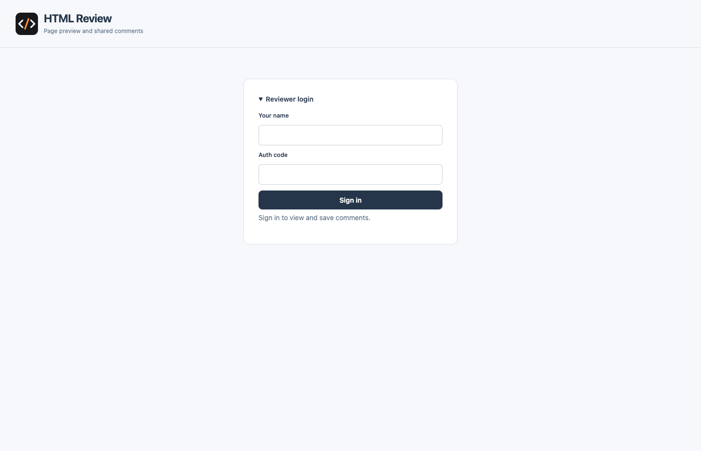
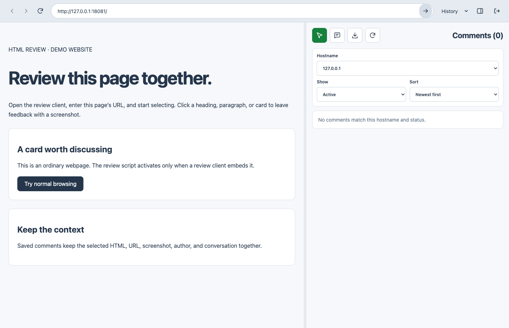
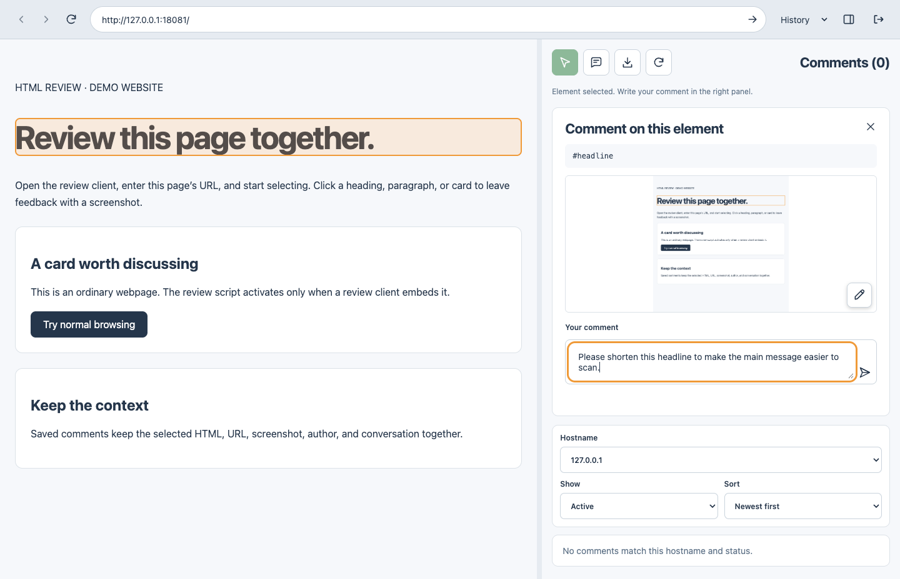
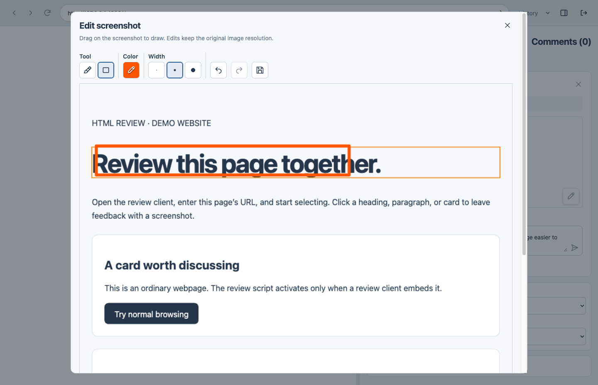
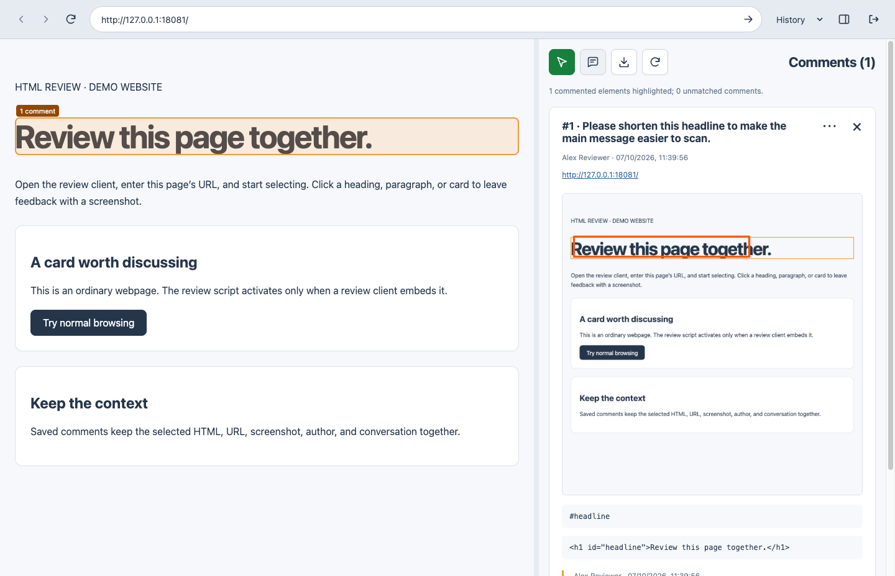
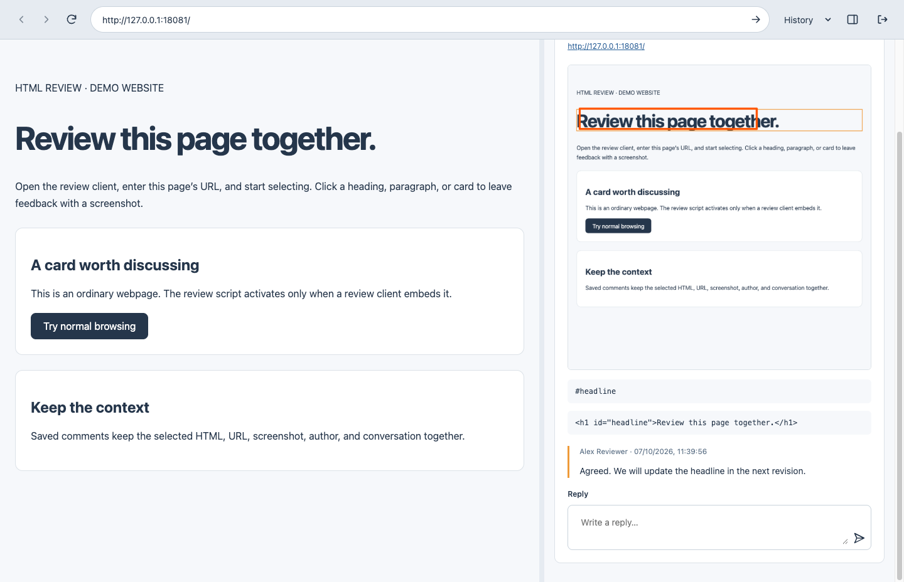
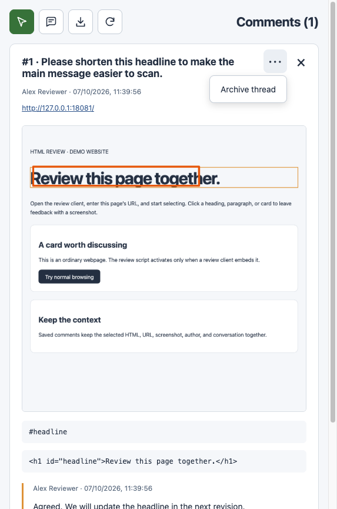

HTML Review 使用指南
更新日期：2026 年 10 月 13 日 · 版本 1.0.1
使用 HTML Review 桌面應用程式瀏覽網站、選取網頁元素，並附上截圖提交留言。已儲存的討論串及回覆會透過審閱伺服器與隊友同步。
以下截圖使用獨立的本機示範環境及示例資料。桌面應用程式的概覽圖片按實際顯示位置合併網站區域及留言區域的截圖。127.0.0.1
網址僅供示範；日常使用時，請改用團隊的網站網址。指南保留介面上的英文名稱，並附上中文說明，方便對照操作。
下載應用程式
請選擇適合你作業系統及處理器的檔案。下載檔案已公開，毋須 GitHub 帳戶。
| 平台 | 直接下載 |
|---|---|
| macOS Apple silicon（M 系列） | HTML.Review-1.0.1-arm64.dmg |
| macOS Intel | HTML.Review-1.0.1-x64.dmg |
| Windows x64 可攜式版本 — 毋須安裝 | HTML.Review.Portable.1.0.1-x64.exe |
| Windows x64 安裝程式 | HTML.Review.Setup.1.0.1-x64.exe |
| Linux x64 | HTML.Review-1.0.1-x64.AppImage |
開始前的準備
請準備你的顯示名稱、管理員提供的審閱者存取碼，以及存取碼允許的網站網址。你的顯示名稱會出現在留言及回覆上。應用程式會自動連接已設定的審閱伺服器。
一般流程：開啟網站 → 選取元素 → 提交意見 → 與隊友回覆討論 → 封存已處理的討論串。
使用 Electron 桌面應用程式
1. 啟動應用程式
從最新公開版本下載適合你作業系統的檔案。
| 平台 | 啟動方式 |
|---|---|
| macOS Apple silicon 或 Intel | 開啟相應的 DMG，將 HTML Review 拖曳至 Applications（應用程式），然後開啟。 |
| Windows x64 可攜式版本 | 按兩下
HTML.Review.Portable.1.0.1-x64.exe，毋須安裝；執行時會將所需檔案解壓至暫存資料夾。 |
| Windows x64 安裝程式 | 執行 HTML.Review.Setup.1.0.1-x64.exe，完成後開啟
HTML Review。 |
| Linux x64 | 按以下指令將 AppImage 設為可執行並啟動。 |
chmod +x HTML.Review-1.0.1-x64.AppImage
./HTML.Review-1.0.1-x64.AppImage1.0.1 版本預設連接已設定的審閱伺服器，毋須安裝 Node.js、npm 或透過指令指定伺服器。請向管理員索取審閱者存取碼。
macOS 套件使用 ad-hoc 簽署，未經 Apple 公證；Windows 套件沒有發行者憑證。作業系統可能顯示安全提示。Windows 及 Linux 版本尚未在各自的作業系統上測試。
如要連接其他伺服器，可於啟動時加入 --server，或設定
REVIEW_SERVER_URL。已安裝的 macOS 應用程式可使用：
open -a "HTML Review" --args --server https://YOUR_REVIEW_SERVERWindows 可攜式版本可於 PowerShell 使用：
.\HTML.Review.Portable.1.0.1-x64.exe --server https://YOUR_REVIEW_SERVER伺服器網址必須使用 HTTPS；本機開發亦可使用 HTTP 回送位址（loopback）。網址不可包含帳戶資料、路徑、查詢參數或片段識別碼。套件及校驗碼詳情請參閱下載及設定 README。
2. 以審閱者身分登入
- 在 Your name（你的名稱）輸入隊友能辨認的名稱。
- 在 Auth code（驗證碼）輸入管理員提供的存取碼。
- 按 Sign in（登入）。

重新啟動應用程式後，系統會保留審閱者登入狀態。登入工作階段會在 24 小時後到期；收到提示時，請重新登入。網站本身的登入是獨立的：如果被審閱的網站需要帳戶，請在應用程式內登入該網站。
3. 開啟網站
- 在網址列輸入完整網站網址，例如
https://staging.example.com。 - 按網址列末端標示為 Open page（開啟網頁）的箭嘴。
- 等候網頁載入。左側會顯示網站，右側會顯示留言。

桌面應用程式會直接開啟網站；網站毋須安裝審閱程式碼，亦毋須允許透過 iframe 嵌入。
將滑鼠指標停留在圖示按鈕上，即可查看按鈕名稱：
| 位置 | 控制項 | 用途 |
|---|---|---|
| 網址列 | Previous page / Next page（上一頁／下一頁） | 在應用程式內已開啟的網頁之間切換 |
| 網址列 | Refresh page（重新整理網頁） | 重新載入網站 |
| 網址列 | History（瀏覽記錄） | 重新開啟曾瀏覽的網址 |
| 網址列 | Hide comments / Show comments（隱藏／顯示留言） | 切換留言面板的顯示狀態 |
| 網址列 | Sign out（登出） | 結束審閱者登入工作階段 |
| 留言工具列 | 指標圖示 — Start selecting（開始選取） | 選取要留言的網頁元素 |
| 留言工具列 | 對話框圖示 — Highlight commented elements（標示已有留言的元素） | 標示目前網頁上有未封存留言的元素 |
| 留言工具列 | 下載箭嘴 — Export（匯出） | 下載 HTML 報告 |
| 留言工具列 | 圓形箭嘴 — Refresh（重新整理） | 重新載入留言清單 |
拖曳網站與留言之間的分隔線，可調整兩側面板的大小。
4. 選取元素並撰寫意見
- 按留言工具列的 Start selecting（開始選取）。
- 將滑鼠指標移至網站上，查看被標示的元素。
- 按一下你想討論的元素。
- 應用程式會擷取目前可見的網頁，並在右側開啟 Comment on this element（就此元素留言）面板。
- 在 Your comment（你的留言）輸入清晰說明，例如「請縮短這個標題，讓讀者更容易掌握主要訊息。」

按 Stop selecting（停止選取）或 Escape，即可返回正常瀏覽模式。按草稿上標示為 Cancel comment（取消留言）的 × 可取消留言；如有未儲存的變更，須確認捨棄草稿。
5. 標註截圖並儲存
- 提交前，按截圖上標示為 Edit screenshot（編輯截圖）的鉛筆圖示。
- 選擇 Brush（畫筆）或 Rectangle（矩形），再選擇繪圖顏色及線條粗幼。
- 在截圖上拖曳以繪製標註。使用 Undo（復原）或 Redo（重做）調整標註。
- 按標示為 Save screenshot（儲存截圖）的磁碟圖示，套用修改。編輯器上標示為 Cancel（取消）的 × 會關閉編輯器，而不套用這次的修改。
- 返回留言面板，按標示為 Save comment（儲存留言）的傳送箭嘴。
- 等候 Comment saved（留言已儲存）訊息及已儲存的討論串出現。

截圖提交後便不能修改，管理員亦不例外。儲存前請檢查截圖及標註。截圖只涵蓋目前可見的網頁區域及主文件；元素選取不支援巢狀 iframe 或 Shadow DOM 根節點。部分跨來源圖片、影片或 CSS 效果在截圖中的顯示可能與網頁不同。
如果儲存失敗，請保留草稿並再次按 Save comment。如果網頁已變更，導致草稿失效，請取消草稿並重新選取元素。
6. 閱讀討論串及回覆
- 使用 Hostname（主機名稱）、Show（顯示）及 Sort（排序）篩選留言清單。
- 選取討論串，查看截圖、元素詳細資料及對話。
- 捲動至 Reply（回覆），輸入回覆，再按 Post reply（提交回覆）。
- 按右上角標示為 Back to comments（返回留言清單）的 ×，返回清單。


按 Highlight commented elements（標示已有留言的元素），標示目前網頁上有未封存討論串的元素。在被標示的元素上按滑鼠右鍵，即可開啟相關討論串。如果建立討論串後網站結構已改變，系統可能無法再找到對應元素。
7. 封存或重新開啟討論串
- 開啟討論串。
- 按詳細資料面板右上角標示為 Comment actions（留言操作）的 ⋯。
- 意見已處理後，選擇 Archive thread（封存討論串）。

如要重新開啟討論串，將 Show 設為 Archived（已封存）或 All（全部），選取討論串，再選擇 Comment actions → Unarchive thread（取消封存討論串）。封存會保留截圖及對話，但在重新開啟前不能新增回覆。
8. 匯出 HTML 報告
- 設定 Hostname、Show 及 Sort 篩選條件，選擇要包含的意見。
- 按留言工具列的下載箭嘴 Export（匯出）。
- 等候系統準備截圖，並顯示已匯出的留言數目。
- 在瀏覽器開啟下載的
html-review-YYYY-MM-DD.html檔案。
匯出會包含所有符合篩選條件的結果頁面，以及截圖和回覆。如要包含已處理的意見，請在匯出前選擇 Show → All。報告包含審閱內容及截圖，請只與指定收件人分享。
疑難排解
| 問題 | 處理方法 |
|---|---|
| 審閱者存取碼被拒絕 | 向管理員核對存取碼及伺服器網址。存取碼可能已被撤銷。 |
| 主機名稱未獲授權 | 請管理員將確切的主機名稱加入你的存取碼，包括重新導向或登入使用的主機名稱。修改後重新開啟網頁。 |
| Start selecting 無法使用 | 等候網站載入，查看狀態訊息，再按 Open page 重試。 |
| 截圖擷取失敗 | 按 Retry capture（重新擷取），或選取其他元素。 |
| 草稿提示網頁已變更 | 取消已失效的草稿，在目前網頁重新選取元素。 |
| 留言或回覆無法儲存 | 保留草稿，檢查網絡連線後重試。 |
| 找不到討論串 | 檢查 Hostname 及 Active / Archived / All 篩選條件，再重新整理。 |
| 無法回覆 | 檢查討論串是否已封存。取消封存後即可繼續討論。 |
| 應用程式要求重新登入 | 登入工作階段可能已到期，或存取碼已被撤銷。請重新登入或聯絡管理員。 |
| 網站畫面中斷連線或當機 | 按 Open page，重新載入網站並恢復連線。 |